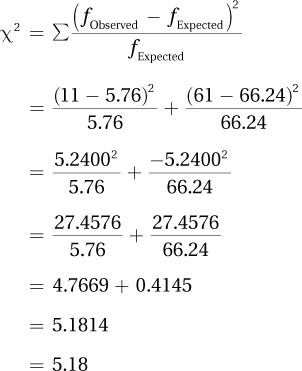
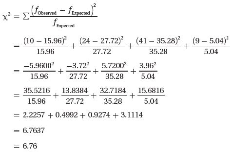

15.2 The Chi-Square Goodness-of-Fit Test
The chi-square goodness-of-fit test is a nonparametric, single-sample test that can be used with a nominal dependent variable or a higher-level variable treated as categorical, such as turning actual scores on an exam into letter grades. This type of test is called a single-sample test because it compares the results from a single sample to a specific value, usually a population value. The chi-square goodness-of-fit test is the nonparametric version of the single-sample z test and single-sample t test.
Here’s an example of how the chi-square goodness-of-fit test might be used. Suppose a university administrator wants to survey a sample of students to get their opinion about a planned decrease in the intramural sports program. The administrator wants to make sure that the sample represents the university population, particularly in terms of gender. His sample is 59% female. From the registrar, he learns that 52% of the students at the university are female. A chi-square goodness-of-fit test could be used to compare the percentage of women in the sample to the percentage of women in the population. This allows the researcher to determine if obtaining a sample that is 59% female is a common occurrence if the population is 52% female. If it is a common occurrence, then he’ll decide that the sample may be representative of the population on this variable and he’ll be more likely to trust the results. If it is an uncommon occurrence, then the sample may be an odd one and its results unrepresentative.
To learn how to calculate and interpret the chi-square goodness-of-fit test, imagine this example from a small community where teenagers believe that the local police single them out more often than adult drivers for traffic stops. To investigate this, a traffic researcher, Dr. Koenig, randomly selected 72 tickets from all the tickets issued during a calendar year. As the age of the driver was recorded on each ticket, Dr. Koenig determined that 11 of the tickets went to teen drivers and 61 went to adults. The results are displayed in two cells, shown in Table 15.1.

569
Teenagers received 11 of the 72 traffic tickets (15.28%) in the sample. Dr. Koenig found, from the Department of Motor Vehicles, that 8% of licensed drivers in the population of the town are teenagers. She reasoned that if teens were treated the same as adults, 8% of the traffic tickets should go to teens. Yet, the teens received more than 15% of the tickets. Do teens get more than their fair share of traffic tickets? Or, can the difference between what is expected (8%) and what is observed (15.28%) be explained by sampling error?
Step 1 Pick a Test
This scenario calls for a single-sample test because a sample value, 15.28%, is being compared to a specific value, 8%. It may seem as if there are two samples (a sample of teens and a sample of adults), but it is just one sample (a sample of ticketed drivers) where the age status of each case is being measured (teen or adult) as the outcome variable. The outcome variable (the category of who gets a ticket, teen or adult) is a nominal-level variable, so the appropriate test is a chi-square goodness-of-fit test. Goodness-of-fit is abbreviated GOF.

Step 2 Check the Assumptions
The chi-square goodness-of-fit test has three assumptions:
Random sample. The sample should be a random sample from the population. This is a robust assumption, so it can be—and usually is—violated. As with parametric tests, if the random sample assumption is violated, then the researcher needs to be careful about generalizing the results from the sample. For the ticket data, there is a random sample of tickets, so the first assumption is not violated. But, the sample is only from tickets given in this town, so generalizability is limited.
Independence of observations. The cases in the sample should be independent of each other. This means that the observations don’t influence each other. This assumption is not robust, so one can’t proceed with the planned test if it is violated. With the ticket data, random sampling was used, so the cases within the sample aren’t connected to each other. In addition, no case was in the sample more than once. The independence of observations assumption is not violated.
Expected frequencies. In order to conduct a chi-square test, all cells must have expected frequencies of at least 5. The chi-square test only works if there are enough cases in each cell. We will cover the method for calculating expected frequencies later in this chapter. Just know that the expected frequencies assumption is not robust, so the chi-square can’t be calculated if each cell doesn’t have enough cases. (For this example, expected frequencies will be large enough and this assumption isn’t violated.)
570
Step 3 List the Hypotheses
The hypotheses for the chi-square goodness-of-fit test are easier to express in words than in mathematical symbols:
The null hypothesis states that the proportion of each category in the population matches specified values. This means that since the sample comes from the population, the proportions in the sample should match the specified values. But, as sampling error exists, one shouldn’t expect the sample to match the specified values exactly.
The alternative hypothesis says that the distribution of the characteristic in the population is different from the specified values. The alternative hypothesis means that the difference between the percentages in the sample and the specified values is too large to be explained by sampling error.
H0: In the population, the percentage of tickets received by teenage drivers = 8%.
H1: In the population, the percentage of tickets received by teenage drivers ≠ 8%.
Step 4 Set the Decision Rule
The decision rule for a chi-square goodness-of-fit test follows the same format as the decision rules for z, t, F, and r:
Find the critical value of chi-square, χ2cv , using a table of critical values of chi-square (Appendix Table 9).
The critical value is the value that separates the rare zone from the common zone in the sampling distribution of chi-square.
The sampling distribution of chi-square is the distribution of chi-square values that would occur if the null hypothesis were true.
Compare χ2, the observed value of the chi-square statistic to χ2cv.
If χ2 ≥ χ2cv , then the observed value of chi-square falls in the rare zone, and reject the null hypothesis.
If χ2 < χ2cv , then the observed value of chi-square falls in the common zone, so fail to reject the null hypothesis.
A portion of Appendix Table 9, the table of critical values of chi-square, is shown in Table 15.2. There are three characteristics to note about the table of critical values of chi-square:
The chi-square is always a two-tailed test. Because chi-square is calculated using squared values, it is always positive. If the results are statistically significant, the researcher will need to look at the direction of the difference in the sample to figure out the direction of the difference in the population.
There are three alpha levels: .01, .05, and .10. The alpha level most commonly used, the column where α = .05, appears in bold. That alpha level represents a 5% chance of making a Type I error. (Type I error occurs when the null hypothesis is rejected by mistake.)
The critical value of chi-square also depends on how many degrees of freedom there are. Each row in the table of critical values represents a different number of degrees of freedom. The critical value of chi-square is found at the intersection of the column for the desired alpha level with the row for the correct number of degrees of freedom.
571
The next step is to find the degrees of freedom, which can be calculated using Equation 15.1.
Equation 15.1 Degrees of Freedom for a Chi-Square Goodness-of-fit Test
df = k – 1
where df = degrees of freedom
k = number of categories
Equation 15.1 says to calculate degrees of freedom (df) for a chi-square goodness-of-fit test as the number of categories, k, minus 1. For the ticket data, the variable is age of drivers and it has two categories—adults and teens. This can be seen in the two cells in Table 15.1. With k = 2, degrees of freedom is calculated as follows:
df = k – 1
= 2 – 1
= 1
Dr. Koenig is willing to have a 5% chance of making a Type I error, so she sets alpha at .05. Looking in the table of critical values of chi-square at the intersection of the row with α = .05 and the row with df = 1, she finds χ2cv = 3.841. The sampling distribution of chi-square, with the rare and common zones marked, is seen in Figure 15.1.

Now that χ2cv is known, the decision rule can be written:
If χ2 ≥ 3.841, reject H0.
If χ2 < 3.841, fail to reject H0.
572
Step 5 Calculate the Test Statistic
Calculating the test statistic, χ2, involves comparing the observed frequency of each category of the dependent variable in the sample to the frequency that would be expected if the null hypothesis were true:
If the differences between observed and expected are small enough to be accounted for by sampling error, then the χ2 value will be small, it will land in the common zone of the sampling distribution, and the null hypothesis won’t be rejected.
If the differences between observed and expected are too large to be accounted for by sampling error, then the χ2 value will be large, it will land in the rare zone, and the null hypothesis will be rejected.
In order to calculate chi-square, one needs to know the observed frequency for each category and the expected frequency for each category. In Chapter 2, f was introduced as the abbreviation for frequency. Now fObserved will be used as the abbreviation for observed frequency and fExpected for expected frequency.
The observed frequencies for each cell (category) of the dependent variable in the sample are already known—there were 11 teens with tickets and 61 adults with tickets. Those are the observed frequencies and Table 15.3 organizes them with each observed frequency in a cell.

The next step is to calculate the expected frequencies for each cell. It is already known that 8% of drivers are teens. The total percentage of drivers is 100%. So, 100% – 8%, or 92%, of drivers must be adults. These two percentages, 8% for teens and 92% for adults, are the expected percentages, abbreviated %Expected, for the two cells. If the null hypothesis is true, one would expect that 8% of tickets would go to teens and 92% to adults. These expected percentages are used to calculate the expected frequencies, as shown in Equation 15.2.
573
Equation 15.2 Formula for Calculating Expected Frequency
where fExpected = expected frequency for a cell/category
%Expected = expected percentage for a cell/category
N = total number of cases in the sample
To calculate the expected frequency of traffic tickets for teenagers in this sample where %Expected = 8% and N = 72, Dr. Koenig uses Equation 15.2:
This means that if the null hypothesis were true and teens received their fair share of the tickets, which is 8%, one would expect 5.76 of these 72 tickets to have been issued to teenagers. Don’t be bothered by the fact that there are fractional tickets. Expected frequencies don’t have to be whole numbers.
Equation 15.2 is also used by Dr. Koenig to calculate the expected frequency for adult tickets. The sample size, N, is still 72, but the expected percentage is now 92%:
If the null hypothesis were true, one would expect the vast majority of the 72 tickets in the sample, 66.24, to go to adults. Only 5.76 are expected to go to teens. Table 15.4 shows the observed frequencies and the expected frequencies. Note that all expected frequencies are greater than 5, so the third assumption was not violated.
574
Notice something interesting in Table 15.4. If the expected frequencies for all the categories are added up, the total is the same as the original sample size: 5.76 + 66.24 = 72.00. This will always be the case and is a good way to check that the math was done correctly in calculating expected frequencies.
A Common Question
Q Do I have to use Equation 15.2 to calculate expected frequencies for each cell?
A No. You can take advantage of the fact that the expected frequencies add up to N and only calculate expected frequencies for as many categories as there are degrees of freedom. Then subtract the calculated frequencies from N to find the missing frequency.
Now that the observed frequencies and expected frequencies are known, they will be used to calculate the test statistic, chi-square. The formula for chi-square is shown in Equation 15.3.
Equation 15.3 Formula for Calculating Chi-Square (χ2)
where χ2 = chi-square value
fObserved = observed frequency for a cell/category
fExpected = expected frequency for a cell/category
To use Equation 15.3 to calculate chi-square, follow these four steps:
For each cell/category, subtract the expected frequency from the observed frequency.
Square each difference.
Divide each squared difference by its respective expected frequency to yield a quotient.
Sum all the quotients to obtain the chi-square value.
575
Here are the calculations for the ticket data, where it is found that χ2 = 5.18:

Step 6 Interpret the Results
In interpreting the results of a chi-square goodness-of-fit test, there are two questions to be addressed: (1) Was the null hypothesis rejected? (2) If so, what is the direction of the results?
Was the Null Hypothesis Rejected?
To answer this question, refer back to the decision rule generated in Step 4. Decide which of the two decision rules is true:
Is 5.18 ≥ 3.841? If so, reject H0 and call the results statistically significant.
Is 5.18 < 3.841? If so, fail to reject H0 and call the results not statistically significant.
With the ticket data, the chi-square value (5.18) is greater than the critical value (3.841), so the first statement is true and the null hypothesis is rejected. This means the difference between the percentages observed in the sample and those found in the population is statistically significant. The differences are too large to be explained by sampling error, so we conclude that the distribution of the dependent variable in the population differs from the specified value in the null hypothesis. Here, this means that the percentage of tickets issued to teens in the population is probably not 8%.
Writing results in APA format for chi-square calls for six pieces of information: (1) what test was done, (2) how many degrees of freedom there were, (3) what the sample size was, (4) what the value of the test statistic was, (5) what alpha level was selected, and (6) whether the null hypothesis was rejected. For the traffic ticket data, Dr. Koenig would write
χ2(1, N = 72) = 5.18, p < .05
χ2 reveals that the test statistic is a chi-square value.
The 1 in the parentheses states the degrees of freedom.
N = 72 gives the sample size.
5.18 is the value of the test statistic that was calculated.
576
.05 indicates that alpha was set at the .05 level.
p < .05 says that the null hypothesis was rejected and that the value of the test statistic (5.18) is a rare one if the null hypothesis is true.
What Is the Direction of the Results?
If the results were statistically significant, the researcher needs to comment on the direction of the difference. This can be done by comparing what was observed to what was expected. If the results were not statistically significant, then there’s not enough evidence to say a difference exists so there’s no need to worry about the direction of the difference.
With the traffic ticket data, there are just two categories, so it is easy to tell the direction of the difference. Teenagers account for 8% of the drivers, but they received 15.28% of the tickets. The researcher can say that 15.28% is statistically higher than 8%. Dr. Koenig can conclude that teens in this town get statistically significantly more tickets than expected for the number of teens who are drivers.
Putting It All Together
A four-point interpretation (What was done? What was found? What does it mean? What suggestions are there for future research?) can be completed for a chi-square goodness-of-fit test. Here’s an interpretation for the traffic ticket data:
A traffic researcher analyzed a sample of traffic tickets from a town in order to determine if teen drivers received proportionally more tickets than adult drivers. 8% of the drivers in the town were teens, but 15.28% of traffic tickets issued went to teens. The difference was statistically significant [χ2(1, N = 72) = 5.18, p < .05]. Teenage drivers in this town get more than their fair share of traffic tickets, almost twice as many as expected. Future research should extend the study to other municipalities. It would also be worthwhile to explore whether the over-ticketing of teen drivers is deserved because they are worse drivers or because they are being unfairly targeted by the police.
Worked Example 15.1
Here’s another example for a chi-square goodness-of-fit test. Courtney had not done well in intro psych and tried to make the case that the instructor, Dr. Wald, was an unfairly harsh grader. As evidence, she counted the number of A’s, B’s, C’s, D’s, and F’s given as final grades for the 84 students in Dr. Wald’s two sections of intro psych (Table 15.5). Courtney then found out, from the registrar, the percentages of A’s, B’s, C’s, D’s, and F’s given in all other sections of intro psych that semester. In this table, D’s and F’s are combined into one category for reasons that will be explained shortly. This distribution, the information from the registrar, is shown in gray in Figure 15.2. Courtney then transformed the distribution of grades for Dr. Wald’s two sections of intro psych into percentages, shown in dark blue in Figure 15.2. As Courtney complained to the school dean, “It is clear in my graph—Professor Wald gives fewer A’s and B’s than the other instructors, but more C’s and more D’s and F’s. Dr. Wald is a harsh and unfair grader.” Is he? To try to clear his name, Dr. Wald is going to need a statistical test.
577
Step 1 Pick a Test. The question being asked is whether the distribution of grades in Dr. Wald’s class is different from the distribution in the larger population. In other words, is the difference between his classes and those of the other professors small enough to be due to the random error associated with sampling? A chi-square goodness-of-fit test addresses this question. Here, letter grades, which are ordinal, are treated as categorical. The appropriateness of this will become clear when two grade categories are merged into one.
Step 2 Check the Assumptions. The three assumptions for a chi-square goodness-of-fit test are (1) random sample, (2) independence of observations, and (3) adequate expected frequencies:
Random sample. With this example, the importance of the random sample assumption is crystal clear. Comparing this sample of grades from two sections to the larger population only makes sense if these two sections have students similar to the students in the other sections. If, for example, both of Dr. Wald’s sections were 8 A.M. sections, it is possible that the students who register for an early morning section differ from those who register for classes that meet at a more reasonable time.
578
The ideal scenario, from an experimenter’s standpoint, would be that students indicate a desire to take intro psych and then are randomly assigned to sections. But, of course, that didn’t happen, so the random samples assumption is violated. The objective of the assumption, though, is to study a sample that is representative of the population. When the random samples assumption is violated, a researcher can proceed with the study if he or she makes the case that the sample is representative. As there was nothing unusual about his two sections, Dr. Wald is willing to continue with the chi-square goodness-of-fit test.
Independence of observations. The independence of observations assumption is not violated as each student was in only one section.
Adequate expected frequencies. All cells must have expected frequencies of at least 5. As will be seen later, each cell has an expected frequency greater than 5, so this assumption is not violated. To achieve this, Dr. Wald put together the small number of D’s and F’s in one cell.
Step 3 List the Hypotheses. The null hypothesis will state that the distribution of outcomes in the population is the same as is specified. The alternative hypothesis will state that the distribution of outcomes in the population is different from the specified values. The specified values, as percentages, are found in Table 15.5.
H0: In the population, the distribution of A’s, B’s, C’s, and D’s/F’s is, respectively, 19%, 33%, 42%, and 6%.
H1: In the population, the distribution of A’s, B’s, C’s, and D’s/F’s is not, respectively, 19%, 33%, 42%, and 6%.
Step 4 Set the Decision Rule. Finding the critical value of chi-square depends on what is set as an acceptable risk of Type I error and the number of degrees of freedom. Dr. Wald follows the convention for Type I error and uses α = .05. Degrees of freedom are calculated with Equation 15.1, which involves knowing k, the number of categories of outcome that are possible. There are four categories for grades (A, B, C, and D or F), so k = 4. To calculate degrees of freedom, apply Equation 15.1:
df = k – 1
= 4 –1
= 3
Looking in Appendix Table 9, the table of critical values of χ2, at the intersection of the column for α = .05 and the row for df = 3, one finds that χ2cv = 7.815. Here is the decision rule:
If χ2 ≥ 7.815, reject H0.
If χ2 < 7.815, fail to reject H0.
Step 5 Calculate the Test Statistic. To calculate the chi-square value, a researcher needs to know the observed and expected frequencies. The observed frequencies were shown in Table 15.5, which also displays the percentages for the expected frequencies.
579
To calculate the expected frequency for A’s, use Equation 15.2, where%Expected = 19% and N = 84:
(The value 19% can be found in Table 15.5.)
Dr. Wald gave only 10 A’s, but if his grade distribution was exactly the same as that found in the entire population, he would have distributed 15.96 A’s. The expected frequency for B’s is
The expected frequency for C is
To find the expected frequency for the last cell, Dr. Wald takes advantage of the fact that there are 3 degrees of freedom, and once the expected frequencies for three cells are known, the fourth can be determined. The sum of the expected frequencies for all the cells will be the same as N, which in this case is 84. So, Dr. Wald subtracts the expected frequencies for the A, B, and C cells from 84, to find the remainder, which is the expected frequency for the D or F cell:
84 – 15.96 – 27.72 – 35.28 = 5.04
Table 15.6 shows the observed frequencies and the expected frequencies for the four categories. To calculate the chi-square statistic, Dr. Wald uses Equation 15.3:

For these data, χ2 = 6.76.
580
Step 6 Interpret the Results. To decide if the null hypothesis is rejected, Dr. Wald uses the decision rule:
Is 6.76 ≥ 7.815? If so, reject the null hypothesis and call the results statistically significant.
If 6.76 < 7.815? If so, fail to reject the null hypothesis and the results are called not statistically significant.
The second statement is true: 6.76 is less than 7.815. As seen in Figure 15.3, the observed value of chi-square, 6.76, falls in the common zone. Dr. Wald has failed to reject the null hypothesis. There is not enough evidence to conclude that the percentages of different grades in the population differ from what was indicated by the null hypothesis. With a sample size of 84, the discrepancy of the observed frequencies from the expected frequencies was small enough that sampling error could account for it. There is insufficient evidence to conclude that Dr. Wald grades more harshly than do the other intro psych faculty.
The results in Figure 15.2 show C’s, and D’s and F’s, turning up more often in Dr. Wald’s grades than among the grades of the other instructors. So, it may not seem correct to conclude that insufficient evidence exists to say that Dr. Wald gives more low grades. However, remember that hypothesis testing works like the American legal system: finding a defendant not guilty is different from saying the defendant is innocent. Saying that the evidence is insufficient is not the same as saying Dr. Wald gives the same grades as the other instructors.
581
In APA format, the results would be reported as
χ2(3, N = 84) = 6.76, p > .05
χ2 says that the test is a chi-square test.
3 is the degrees of freedom.
N = 84 gives the sample size.
6.76 is the calculated value of chi-square.
.05 indicates that alpha was set at the .05 level.
p > .05 says that the null hypothesis was not rejected. The value of the test statistic (6.76) is a common one. It happens more than 5% of the time when the null hypothesis is true.
Here is a four-point interpretation for these results:
A psychology professor gave more C’s, D’s, and F’s than the other instructors. A chi-square goodness-of-fit test was used to see if he was a harsher grader than the others. The results showed that his grade distribution was not statistically different [X2 (3, N = 84) = 6.76, p > .05]. This means there is not enough evidence to say that this professor grades differently from the other instructors. If one were to replicate this study, it would be desirable to use a larger sample and to measure characteristics like sex and GPA in order to make sure that the students in his classes are similar to students in the other classes.
Practice Problems 15.1
15.01 People in the world are classified in terms of their natural hair color: black, blonde, brown, red, auburn, chestnut, grey, or white. A hair salon owner keeps track of the natural color of her clients. If she wants to use a chi-square goodness-of-fit test to compare the distribution of hair colors in her salon to the worldwide distribution, how many degrees of freedom will she have?
15.02 If α = .01 and df = 2, what is χ2cv?
15.03 Current worldwide estimates are that 51.69% of births are boys and 48.31% are girls. A demographer in the United States obtained a random sample of 5,873 births from all 50 states, determined the sex of each child, and planned to use a chi-square goodness-of-fit test to compare the sex of children born in the United States to the world rate. What are his expected frequencies?
15.04 A researcher is conducting a chi-square goodness-of-fit test on a variable that has two categories. The observed frequencies are 75 for Cell A and 82 for Cell B. The expected frequencies are 62.80 for Cell A and 94.20 for Cell B. Calculate χ2.
15.05 If N = 73, df = 1, α = .05, and χ2 = 4.72, write the results in APA format.